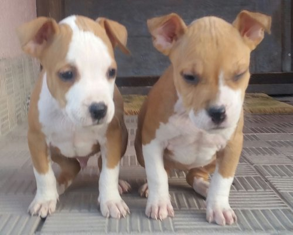

Američki Staford Terijer
Početkom 19. veka u Velikoj Britaniji nastao je Staford Bul Terijer a nastao je spajanjem buldoga i terijera kako bi se dobio manji, snažan i okretan pas. Tako dobiveni psi koristili su se za tada vrlo popularne borbe pasa, a bili su poznati pod imenom „Bull and Terrier“ ili „Half and half“. Svi oblici borbe pasa zabranjeni su 1835. godine, ali su se u nekim krugovima i dalje održavali u tajnosti.
Kolonizacijom Amerike ljudi su poveli i svoje četveronožne ljubimce, pa se tako ovaj pas brzo proširio novim kontinentom. Oko 1870. godine u Americi „Bull and Terrier“ počinje se koristiti drugo ime – „Pit Bul Terijer“.
Prva pasmina koja je ušla u taj registar bio je Pit Bull Terrier. Zbog naglaska na autohtonost pasmine u ime su dodali još i „American“, znači - Amerčki Pit Bul Terijer.Tog psa su prvobitno koristili za borbe. Oni koji su voleli ovu pasminu zalagali su se da se službeno prizna, i konačno je 1936. godine američki kinološki savez priznao ovu pasminu kao Američki Staford Terijer.
Kako je vreme prolazilo postale su očite razlike između američkog i britanskog stafforda. Američki uzgajivači razvili su težeg i većeg psa od onog u Velikoj Britaniji pa više nije bilo praktično svrstavati ih pod istu pasminu.Te su 1972. god. Američkog Staford Terijera razdvojili od Staford Bul Terijer.
Tako da samo imamo razlike između Američkog Staford Terijera, Staford Bul Terijer i Engleskog Bul Terijera.
Evolucija imena te rase u Americi, Američkog Pit Bula iliti Američkog Staforda Terijera. I to je sve jedan te isti pas:
- Pit Bull Terrier– druga polovina 19. veka
- American Pit Bull Terrier– 1898. godine
- Staffordshire Terrier– 1936. godine
- American Staffordshire Terrier– 1972. Godine
FCI i AKC ne priznaju Američkog Pit Bul Terijera, dok je Američki Staford Terijer priznat svetski pas, ali UKC (United Kennel Club) priznaju APBT, ali ne priznaju AST (Američkog Stafordskog Terijera). A to znači da je kod nas priznat Staford, a Pit Bul ne.
Zato su mnogi psi te iste rase kod AKC registrovani kao Stafordi, a kod UKC Pit Bulovi.
Američki Pit Bul Terijer je ustvari prvobitna radna verzija Američkog Staforda Terijera, u kojoj se nije gledao toliko izgled psa. Bitno je bilo da ima temperament, jer su ga amerikanci koristili za borbe, tako da mu se priznaje‚ i crven nos, sve boje i još neke stvari vezane za pigmentaciju njuška i kapaka, dok su kasnije, kad su priznali‚ tu rasu, ali pod nazivom Američki Staford Terijer (zbog ozoglašenost ime Pit Bul je promenjeno), s tim što su joj postavili veće standarde, njuška ne sme biti crvena i ne sme da ima 80% više od bele boje, ima jaču muskulaturu, jednostavno mora biti sređeniji pas za izložbe.
Opis. Visina: 44 do 46 cm - muški, ženski 10% manje. Težina 17 do 20 kg. Ovi psi su snažnog, mišićavog tela, ali usprkos tome, vrlo mobilni. Oči su okrugle, često crne. Uši uspravne, neznatno skraćene. Rep je kratak, održava se vodoravno. Dlaka je gusta, kratka i sjajna. Bilo kojja boja je dozvoljena, ali bela ne sme prelaziti 80%.
Uopšteno, razlika itmedju APBT i AST je vidljiva po glavi i grudnom košu. Glava kod AST je malo šira, kao i grudi, tako da deluje jače i mišićavije od APBT.